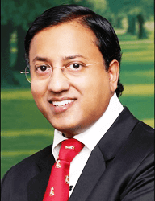
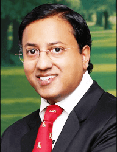
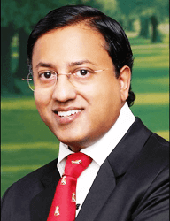

মোবাইল অ্যাপে ‘এবিসি অফ ব্রেস্ট হেল্থ’
12 টি ভাষাতে
(ইংরেজী, হিন্দী, তেলুগু, কানাড়া, মালয়ালম,তামিল, গুজরাটি, পান্জাবী,বাংলা, মারাঠি,ওড়িয়া ও অসমিয়া)
স্তন ক্য়ান্সার হচ্ছে সবথেকে প্রচলিত ক্য়ান্সার যা ভারতে মহিলাদের প্রভাবিত করছে। দেশের বহূ জায়গায়, এটি একটি ‘ট্য়াবু’ – একটি ‘রূদ্ধ’ প্রচলন যা প্রকাশ্য়ে আলোচনা হয় না। সচেতনতার অভাবের জন্য়, 60% এর বেশি স্তন ক্য়ান্সার যা অ্যাডভান্স্ড স্টেজে উপস্থিত, বেশির ভাগ মারা যায় রোগ নির্ণয় হওয়ার এক বছরের
শ্রী নরেন্দ্র মোদী জি, আমাদের মাননীয় প্রধানমন্ত্রীর ডিজিটাল ইন্ডিয়ার স্বপ্ন দ্বারা অনুপ্রাণিত, হায়দ্রাবাদ ভিত্তিক ঊষালক্ষ্মী ব্রেস্ট ক্য়ান্সার ফাউন্ডেশন, নিযুক্ত করে দিয়েছে 12টি ভাষায় উপলব্ধি (ইংরাজি, হিন্দি, তেলুগু, কান্নাডা, মালায়ালম, তামিল, গুজরাটি, পান্জাবি, বাংলা, মারাঠি, উড়িয়া এবং আসামি)একটি সরল বুঝতে সহজ ফর্ম্য়াটে মোবাইল অ্যাপে স্তন ক্য়ান্সার এবং কম ক্ষতিকারক অ-ক্য়ান্সার স্তন স্বাস্থ্য় সমস্য়ার প্রতিটি দৃষ্টিভন্গির সম্পর্কে তথ্য় প্রাপ্তিসাধ্য় করে তোলায়।
আমি অত্য়ন্ত নিশ্চিত জ়ে ডিজিটাক মিডিয়ার সাহায্য়ে পৃথিবীতে প্রথম এরকম বড় উদ্য়োগ দেশের প্রত্য়েকটি প্রচলিত ভাষার নকল করা হলে তা গোটা জাতির চেতনা বৃদ্ধি করবে স্তনের স্বাস্থ্য় সম্পর্কে যা মানুষকে অধিকতর ভাল সিদ্ধান্ত নিতে প্রস্তুত করবে, এইভাবে ভারতবর্ষে স্তনের সচেতনতায় জ়ে বিশাল ফা৺ক ছিল তা অনেকটাই কমিয়ে

ডা: পি. রঘু রাম
এমএস(খজ),
এফাঅরসিএস (এডিনবার্গ),
এফাঅরসিএস(ইংল্য়ান্ড),
এফাঅরসিএস (গ্লাসগো),
এফাঅরসিএস (আয়ারল্য়ান্ড),
এফএসিএস
পদ্মশ্রী পুরস্কারপ্রাপ্ত (2015)
Dr.B.C. রায় জাতীয়
পুরস্কারপ্রাপ্ত (2016)
সিইও(ইউঘ) ও ডিরেক্টর